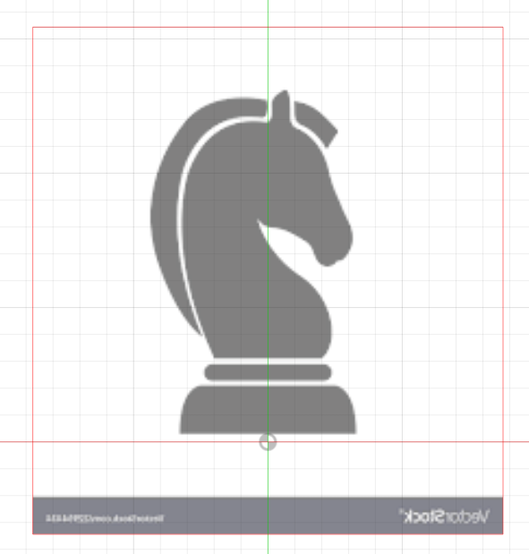
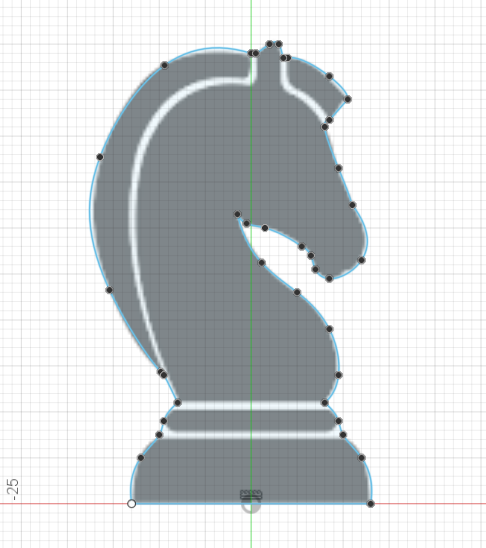
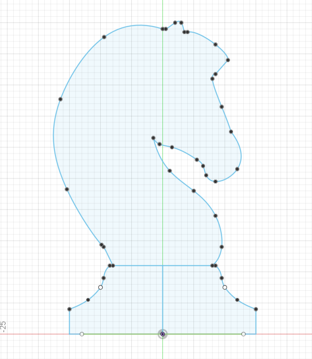
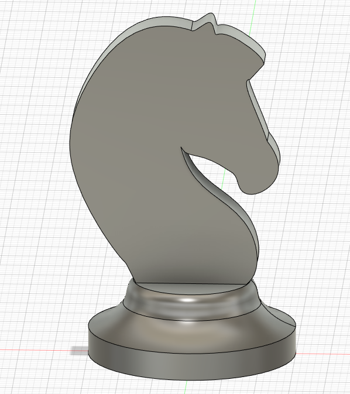
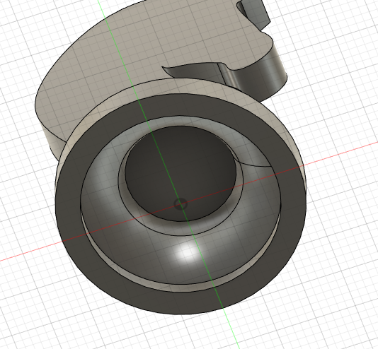

3D Modeling
3D modeling is used to visualise the final product before using any materials for prototyping.
Chess Piece practice - Knight
To create the model of the head, I used an image found on Google as a template
I inserted the image as a canvas and reduced the opacity so it was overlaid on the workspace. Then, I resized it until the image height was 50mm. With the template in place, I created a sketch and used the Fit Point Spline tool to draw the outline of the head of the chess piece, following the canvas template.
|  |  |
To make the base 30mm as specified, I made some small changes to the outline of the base of the chess piece.
After completing the sketch, I used the revolve tool to create the base of the chess piece. Then, I extruded the head of the chess piece to 5mm to create the body. I then selected the body and centered it on the base. Using the shell tool, I made the base of the chess piece hollow.
|  |  |